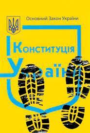

КАЗНИТЬ нельзя помиловать
або як судова влада баранить кооперативне «стадо»
Далекого 2013р. державний реєстратор Департаменту організаційного забезпечення Черкаської міської ради Іващенко Н.М., на виконання заяви юриста Кулика А.О., за відсутності протоколу загальних зборів членів гаражно-будівельного кооператива «Сирена» (код ЄДРПОУ 22792088) в порушення вимог та приписів чинного законодавства внесла до державного реєстру відомості про нового «керівника» підприємства - Середенка В.І. Новоспечений голова правління занулив штат найманих працівників та одноособово (і за керівника, і за бухгалтера, і за охоронця, і за двірника, і за електрика, і за всіх-всіх-всіх…) взявся опікуватися проблемами кооператива. Але через сім років найбільшою проблемою ГБК «Сирена» став сам Середенко В.І. - у березні 2020р. кооператив залишився без світла за борги. Стали розбиратися, а боргові «поліпшення» від Середенка В.І. вимірюються десятками тисяч, сотнями тисяч, ба більше – мільйонами гривень. Верхівка айсберга – це всього лише тримісячні несплачені послуги з електропостачання, технічного обслуговування мереж, вивезення сміття, багаторічні борги за оренду землі. А там, на глибині – понад вісім мільйонів податкового штрафу…
Сім років псевдокерівник «динамив» спільний бюджет дев’ятисот членів кооперативу. Сім років розвішував лапшу про «усе добре». Сім років прикривався фальшивим записом з державного реєстру про виборні повноваження керівника, залучаючи до надання послуг без відповідних рішень загальних зборів приватну охоронну фірму та успішного до «вирішення» проблемних питань адвоката (так-так – юриста з далекого 2013р., того самого Кулика А.О.). Сім років будував власну імперію: перепродаж гаражів, карманний облік членських внесків без ведення бухгалтерії, завищені розцінки за договорами охорони, вивід готівки через фіктивні юридичні послуги, робота без банківського рахунку, розпродаж майна з перекуплених гаражів… І увесь цей час – жодних загальних зборів за кворумом. Три редакції підробленого статуту за сприяння в їх державній реєстрації юриста Кулика А.О. Правду не приховаєш, обвинувальний акт за підробки Середенко В.І. таки отримав, але як зручно мати «свою» людину у суді – справа два роки «розглядалася» самим головою Соснівського районного суду м.Черкаси Бащенком С.М., з двадцяти трьох судових засідань двадцять один перенос. Не так вже й довго довелося зачекати – друг закрив розгляд за закінченням строку притягнення до відповідальності, а скарга на удаване судочинство до «некорумпованої» Вищої ради правосуддя луснула як мильна бульбашка. Та разом з бульбашкою «луснув» і оригінал реєстраційної справи ГБК «Сирена», який Бащенко С.М. тримав у судовій справі весь час так би мовити розгляду: після закриття провадження своєю ухвалою повернув цей оригінал, на його думку, за «належністю * витяг з резолютивної частини судового рішення: “...речові докази: - реєстраційна справа гаражно-будівельного кооперативу «Сирена», приєднана до матеріалів кримінального провадження повернути за належністю голові кооперативу…” » - Середенку В.І. Наразі суд тицяє на прокуратуру, прокуратура тицяє на департамент, департамент тицяє на прокуратуру. В принципі, зрозуміло – коло замкнулося. Але ота оригінальна реєстраційна справа зробила «ку-ку»…
Перший вдалий фінансовий відкат спрацював у Середенка В.І. ще у 2015р.: зібравши з членів кооператива більше двохсот тисяч гривень на погашення за судовим рішенням (справа №925/1212/14) упущеної вигоди по сплаті за користування земельною ділянкою, до державної виконавчої служби Середенко В.І. не перерахував жодної гривні. І на диво, виконавче провадження у визначений трирічний строк стягнення (2014-2017р.р.), звісно, закрилося без виконання. Ще раз: члени ГБК «Сирена» у 2015р. сплатили належні до стягнення кошти, а виконавче провадження закрилося БЕЗ ВИКОНАННЯ. Непогашений, але оплачений членами кооператива, судовий борг так і висить дотепер. У меншому розмірі, щоправда, бо частково погашений, на жаль, із внесків наступних періодів.
Із подальших фінансових маніпуляцій, якщо закрити очі на дрібні систематичні «відкуси», слід звернути увагу на оплату членського внеску членами ГБК у 2017р.: псевдокерівник Середенко В.І. (за однією версією т.в.о., за іншою – «переобраний», а по факту банальний шахрай по схемі підтасованого запису в державному реєстрі, який вважав проведення загальних зборів зайвим клопотом) зібрав кошти на оплату оренди з користування земельною ділянкою із розрахунку 3% нормативної грошової оцінки, а до міського бюджету спрямував лише 1%, і то не у повному обсязі. Уже на той, 2017р., недоїмка перед міською радою по оренді землі сягала сотень тисяч гривень (судова справа №925/994/17). Проте у Середенка В.І. для членів кооператива відповідь щодо поточного фінансового стану ГБК була завчасно стандартною – «усьо харашо». А земельна складова із членського внеску перемістилася у «паралельну» реальність. Круть-верть та верть-круть з оплатою оренди землі врешті-решт для кооператива переросли у штрафи та пені з прострочення і недоїмки: на початок 2020р. десь близько чотирьохсот тисяч гривень.
Полуничкою на середенківському тортику є його восьмимільйонний штраф (судова справа №580/2444/19, справа №580/1672/19). Банальна фактична податкова перевірка у 2017р. забуксувала через відсутність бухгалтерської документації - Середенко В.І., будучи одноособовим відповідальним за ведення бухгалтерського обліку (в т.ч. через внесення відповідних положень у підроблені статути з подальшим обліком у податкових реєстрах), бухгалтерський облік не здійснював. Перевірочну «пожежу» загасив заявою до поліції про «втрату» документації та довідкою-обіцянкою до податкової про її відновлення у найближчий тримісячний термін. Але і перший строк, і наступний додатковий на нові три місяці «втрачену» документацію не виродили. На виклики податкової щодо прибуття до її центрального офісу для завершення проведення перевірки Середенко В.І. не реагував. В подальшому тричі ховався від виїзної податкової перевірки. Врешті-решт, ДФСУ нагородило кооператив восьмимільйонним штрафом: надходження в ГБК за три роки, що передували перевірці, помножили на п’ять за порушення розрахунково-касової дисципліни, а зрозумілою мовою – за відсутність бухгалтерської документації. З точки зору податкової, сплачені членські внески, що пройшли через карман Середенка В.І. (оскільки банківського рахунку так ніхто і не відкривав), не оприбутковані належним чином, а тому необхідно ще п’ять раз стягнути з усіх членів кооперативу у вигляді штрафу трирічні внески. Тобто, своєчасного оприбуткування не провів Середенко В.І., а штраф мають сплатити дев’ятсот членів ГБК «Сирена». Як тільки кооперативна громада дізнається про мільйонні борги на фоні «усьо харашо», Середенко В.І. зникає з робочого місця та під прикриттям розпочавшогося карантину кидає ГБК у прірву вже очевидного передбанкрутного стану.
Об’єднана та згуртована громада кооператива, розгорнувши термінову операцію з подолання штучно створеної шахрайськими діями Середенка В.І. кризи, оголосила останньому недовіру, а в січні 2021р. (за участі необхідної для кворуму кількості присутніх осіб на загальних зборах) послала його за руськім воєнним кораблем. Злетівши з хлібного місця, Середенко В.І. спільно з поплічниками тут же розгорнув операцію по добиванню скаліченого кооператива новими штрафами – безпідставні скарги направилися до податкової, Управління Держпраці, департаментів міськради.
І ось наразі, витримавши необхідну паузу, фінансовий геній «матеріалізувався» у Придніпровському районному суді м.Черкаси з позовом про поновлення на роботі (справа №711/5788/21). Багаторічне взаємне порозуміння Середенка В.І. та «судової» влади потребує окремої уваги – за весь період численних судових процесів ніхто ніколи не зміг побачити протокол загальних зборів ГБК «Сирена» про обрання Середенка В.І. головою правління кооператива. Всі без виключення клопотання про витребування такого протоколу суддями Придніпровського районного суду м.Черкаси ігнорувалися, а «батько» середенківських повноважень суддя Шипович В.В. за успішно пройденим конкурсом наразі формує у Верховному Суді «правозастосовчу» практику. Поточний судовий спір під головуванням судді Позарецької С.М. планомірно направляється до завідомо договірного рішення, за яким Середенку В.І. підготували повернення до виборної посади всупереч вимогам законодавства про кооперацію щодо процедури та строків обрання. Звичка Середенка В.І. брехати всім і всюди відобразилася і в поданій позовній заяві, яка починається з фіктивної дати видачі трудової книжки. Обов’язковий для таких випадків контроль пропущеного строку звернення до суду за захистом порушеного права суддею Позарецькою Н.М. проігнорований, внаслідок чого справа почала розглядатися без рішення судді про поновлення строку позовної давності. Суд підтримує позицію Середенка В.І., що на розгляд справи не впливає ані строк чинних виборних повноважень (в межах якого особа може у законний спосіб захищати порушене право), ані наявність протоколу про обрання загальними зборами голови правління. Наразі для суду достатньою умовою «захисту» звільненого Середенка В.І. є всього лише запис у трудовій книжці, а також ота давня махінація з заходом у державний реєстр. І це при тому, що товстенним шаром пилу припадає не одна кримінальна справа за участі Середенка В.І., серед яких є й про знищення та утримання документації кооператива. Іншими словами, махінатор набив кармани (по методичкам та гороскопам), на всіх членів ГБК скинув мільйонні штрафи, ліквідував протокольно-статутну документацію, а тепер через черговий договірний судовий процес всупереч думки громади мріє повернутися до «робочого» місця, на яке перед звільненням не з’являвся десь місяців чотирнадцять. Судді Позарецькій С.М. вже впарюється версія про те, що Середенка В.І. не пускали на роботу самі ж члени кооператива – і поки що ця версія, на диво, працює.
Без «допомоги» судової влади всі махінації Середенка В.І. розвалилися б за декілька засідань. Але не в цих випадках: багаторівнева суддівська корупція представлена і у Верховному Суді. Процеси за участі Середенка В.І. ще на стадії першої інстанції вже потрапляють під «контроль» касаційних суддів, і на завершальних стадіях або вирішуються з ігноруванням чинних законодавчих норм (на кшталт, не всі аргументи та докази опонентів мають бути взятими до уваги – за вибірковим принципом), або тупо повертаються через відмову у прийнятті до розгляду. Останній касаційний реверанс має місце і у процесі Позарецької С.М., яка відхилила зустрічний позов кооператива до Середенка В.І. за безпідставно нараховану заробітну плату у період, який не підтверджений протоколами загальних зборів ГБК. Суть проста – замахінарив запис в державному реєстрі, записався у трудовій книжці, призначив заробітну плату та сім років проштовхував ідею свого «керівництва» за принципом тимчасового виконання обов’язків, оскільки ну не вдається набрати на зборах необхідний кворум. А тепер касаційний суд не вбачає підстав для перегляду рішення апеляційної інстанції, яка не підтримує ідею спільного розгляду двох взаємопов’язаних спорів, що виникають з трудових відносин. Судді Позарецькій С.М. потрібний тихий та швидкий «захист» трудового права Середенка В.І., а зустрічний позов заважає цьому, бо розкриває весь механізм багаторічних махінацій. І тепер «стаду» лошариків рішенням суду всупереч вимогам закону та статуту ГБК будуть ПРИЗНАЧАТИ голову правління, який до сих пір так і не пояснив громаді кооперативу природу напрацьованих штрафів та недоїмок.
Після скандального рішення Конституційного Суду щодо необхідності більш детального «тлумачення» поняття завідомо неправосудного рішення, суддівський цинізм набирає обертів у геометричній прогресії – замовні рішення фабрикуються пачками, а ДБР та НАБУ філонять кримінальні справи по таких рішеннях, оскільки Верховна Рада ще не визначилася з «тлумаченням». Дуже зручна позиція, особливо на фоні військової агресії та задекларованого принципу європейської орієнтації, в тому числі і в питанні судової реформи. Кооператив тричі нахлобучили завідомо неправосудним судовим рішенням по тому середенківському мільйонному штрафу. Судді Черкаського окружного адміністративного суду Тимошенко В.П. (справа №580/2444/19) та Руденко А.В. (справа №580/1672/19) у 2020р. примудрилися оштрафувати ГБК «Сирена» за позовом ДФСУ на понад вісім мільйонів гривень за нормами Указу Президента України, який на момент винесення рішень втратив законну силу. Попри наявні роз’яснення Верховного Суду, а також офіційної правової позиції податкового органу контролю, за якою норми того указу застосуванню не підлягають. За неймовірно катастрофічним «збігом» обставин касаційна інстанція не прийняла до розгляду скарги кооператива і повернула без розгляду, узаконивши БЕЗЗАКОННЯ.
Додатковим позовом за одним і тим же мільйонним штрафом у 2022р. суддя Черкаського окружного адміністративного суду Білоноженко М.А. (справа №580/10266/21) тихо, без виклику сторін, з очевидним відвертим порушенням норм процесуального права (наявність зустрічного позову та перевищення порогу матеріального стягнення) в порядку спрощеного провадження знову задовольнила претензії ДПСУ на підставі того ж таки скасованого Указу Президента України. І тепер кооператив має два судових рішення за одним і тим же штрафом з перспективою примусового стягнення за окремими виконавчими листами вже не на вісім мільйонів гривень, а на сімнадцять мільйонів.
Коли пазлик починає складатися до кінця, виникає доречне запитання – кому ж все таки потрібний такий банкрутар Середенко В.І. та «опущений» в нуль за завідомо неправосудними судовими рішеннями кооператив? ГБК «Сирена» користується великою земельною ділянкою правильної геометричної форми у більш ніж 4га в промисловій зоні міста та «сидить» у прямому сенсі на всіх комунікаціях. Це як версія один. Версія два: Середенко В.І. неодноразово видавав невдоволеним членам кооператива застереження, що у приватному кооперативі доведеться річний членський внесок платити дванадцять раз.
А може таких версій більше ніж дві?..
“...ВОР ДОЛЖЕН СИДЕТЬ В ТЮРЬМЕ…”?
або скільки коштує лояльність суддів, прокурорів та правоохоронців
Божа заповідь “не кради” погано приживається у мізках Середенка В.І. Після невдалого досвіду цукрового оптово-роздрібного реалізатора за кошти кооператива на посаді казначея махінатор збільшив апетити та вписався у новий образ вже керівника. Але все одно, як не крути, колишніх шахраїв не буває. Першим же “передвиборним” актом Середенко В.І. (ще у 2013р.) дає громаді посил, що відсутність банківського рахунку у кооперативі - це величезне порушення, яке він безумовно першочергово виправить.
Не дочекавшись виконання обіцянки, члени кооперативу самостійно розпочали судовий процес повернення у площину контролю фінансових надходжень (справа №711/6059/16, справа №711/6201/17) з банальною вимогою про відкриття банківського рахунку. І тут же намалювалася найперша ж проблема в розпочатих судових процесах - повноваження Середенка В.І. Шури-мури, мури-шури - і суддя Придніпровського районного суду м.Черкаси Шипович В.В. відхиляє клопотання позивача про витребування протоколу загальних зборів членів ГБК “Сирена” щодо обрання Середенка В.І. головою правління; постановляє перевірку повноважень обмежити старою випискою з ЄДР. В подальшому суддя Шипович В.В., як “батько” насмоктаних з пальця повноважень Середенка В.І., приймає у справу непідписаний протокол зборів (по факту - пожовклу пожмакану підтирачку) та заштовхує в судове рішення неіснуючу законодавчу норму про право зборів членів кооператива відмовитися від відкриття банківського рахунку. По суті, суддя Шипович В.В. запровадив судову норму, за якою виконання вимог законів скасовується рішенням зборів кооперативу. Все - шлях для подальшого неконтрольованого потоку готівки через карман псевдоголови правління відкритий. Це при тому, що декілька сотень тисяч гривень внесків членів кооперативу вже на той час перемістилися у паралельну реальність.
За шаблоном судді Шиповича В.В. здувся позов у справі №711/6059/16. Як виявилося, норми законів та положень НБУ, а також матеріали контрольних перевірок ДПСУ про наявні порушення касової дисципліни не є достатніми доказами для роботи через банківський рахунок: готівка продовжила протікати виключно через руки Середенка В.І., а крива штрафів та недоїмок у підвищеному темпі потягнулася до півмільйонної позначки.
Тенденції не змінилися навіть з відкриттям низки кримінальних справ - всі без виключення провадження підпирають перекошені столи в Районному управлінні поліції ГУ НП в Черкаській області, або тихцем закриті за “відсутністю” складу злочину. Воно і зрозуміло, якщо, наприклад, слідча Ходосовька О.В. вважає Середенка В.І., змінусувавшого кооператив на дев’ять мільйонів гривень, найчеснішою людиною у світі.
Корупційним пилом припадають заяви кооператива щодо проведення розслідування за фактами ухвалення завідомо неправосудних рішень та зловживання суддями службовим становищем при розгляді позовів за скасованими нормативно-правовими документами: ДБР, ТУ ДБР, НАБУ, Печерський/Шевченківський/Солом’янський районні суди м.Києва вражають і вражають процесуальними викрутасами в педалюванні звернень. Поодинокі законні по суті судові рішення місяцями вилежуються поміж суддівських висяків та до електронного державного реєстру судових рішень потрапляють у кращому випадку дуже-дуже-дуже нескоро. Якщо сильно захотіти, то набираюча обертів державна цифровізація може давати “непередбачувані” збої - відсутність бамажки заважає починати досудове розслідування.
Сучасні “джентельмени удачі” середенки живуть за іншими правилами: ВКРАВ, ВИПИВ, ЗАНІС. Бо відсутність верховенства права перетворила середньостатистичного адвоката у банального ЗАНОШУ. Адже за такої системи робота без “рішалки” - це для баранців з ПОЛЯ ДУРНІВ.
Старалися зробити як краще, а вийшло - як завжди: Україна показала, що СУДДЯ і $уддя, це, в принципі, таки різні поняття.
Час для прийняття в першому читанні та вцілому Рішального процесуального кодексу України настав.